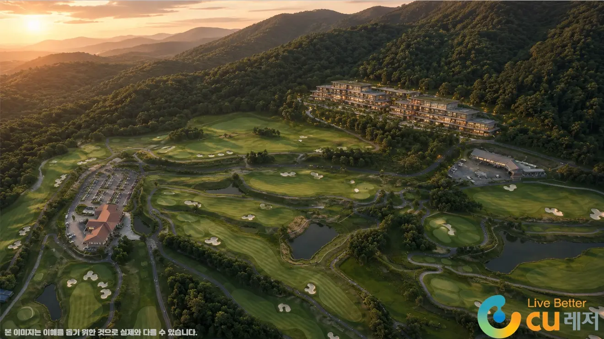
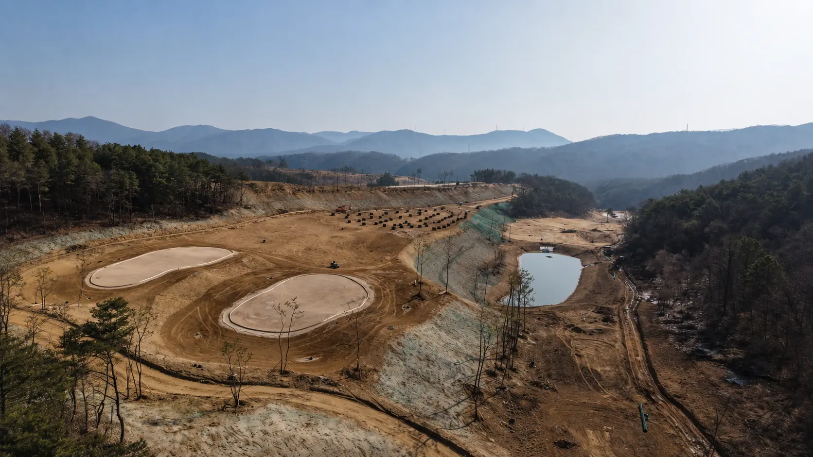
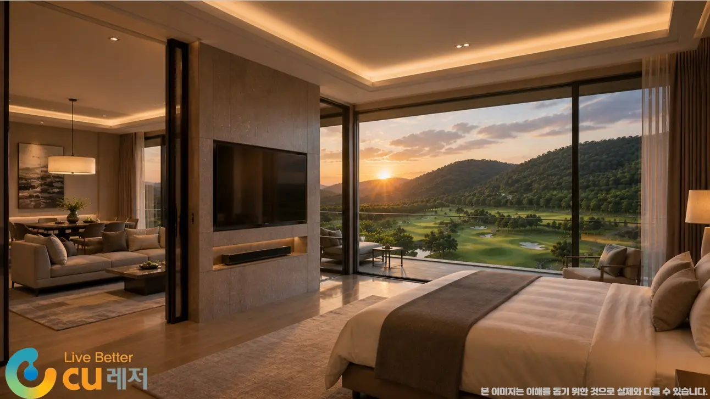
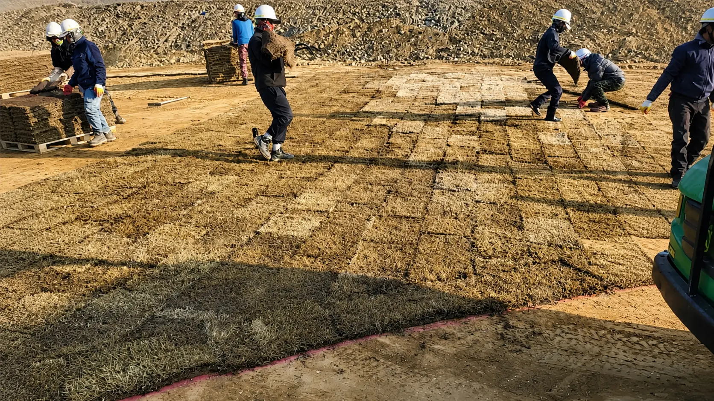
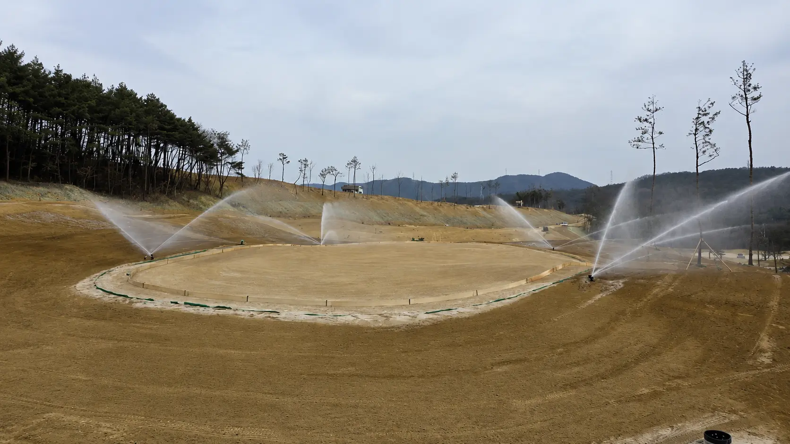

군위수서골프장의 공사는 현재 계획에 따라 순조롭게 진행되고 있습니다. 단순한 스포츠 시설을 넘어 자연과 조화를 이루는 힐링 골프 리조트로 조성 중인 이 프로젝트는, 차별화된 코스 설계와 고급 부대시설을 갖춰 골프를 즐기는 모든 분들에게 편안한 환경을 제공하는 것을 목표로 하고 있습니다.

A·B·C 세 코스, 18홀 6,997야드
군위수서CC는 총 18홀 규모로, A·B·C 세 개의 코스로 구성됩니다. 각 코스는 아름다운 경관과 세밀한 설계, 균형 잡힌 난이도로 조성되어, 초보자부터 숙련된 골퍼까지 누구나 자신의 실력에 맞춰 최적의 라운딩을 즐길 수 있도록 준비되고 있습니다.
SCORECARD
| NO | YARDS | PAR | NO | YARDS | PAR | NO | YARDS | PAR |
|---|---|---|---|---|---|---|---|---|
| A1 | 432 | 4 | B1 | 383 | 4 | C1 | 407 | 4 |
| A2 | 388 | 4 | B2 | 383 | 4 | C2 | 355 | 4 |
| A3 | 429 | 4 | B3 | 498 | 5 | C3 | 208 | 3 |
| A4 | 140 | 3 | B4 | 405 | 4 | C4 | 558 | 5 |
| A5 | 427 | 4 | B5 | 222 | 3 | C5 | 421 | 4 |
| A6 | 569 | 5 | B6 | 383 | 4 | C6 | 389 | 4 |
| SUM | 2,385 | 24 | SUM | 2,274 | 24 | SUM | 2,338 | 24 |
| 18 HOLE TOTAL (A + B + C) | 6,997 | 72 | ||||||
각 코스는 난이도가 조화롭게 배치되어 있어, 초보 골퍼는 부담 없이 즐길 수 있고 숙련자에게는 전략적인 플레이와 재미를 줄 수 있는 설계로 구성되어 있습니다.

군위수서CC, 5가지 차별화 포인트
군위수서CC는 단순히 골프만 즐기는 곳이 아닙니다. 라운딩을 시작하는 순간부터 힐링이 시작되는 '골프앤리조트'로 탄생할 예정입니다.
-
자연을 담은 코스 뷰 완만한 지형과 푸른 숲이 어우러진 자연 친화적 환경
-
계절별 최적의 코스 관리 늘 쾌적한 라운딩이 가능한 체계적인 관리
-
도전과 전략이 공존하는 코스 구성 실력에 따라 다양한 공략 가능
-
프리미엄 부대시설 클럽하우스, 고급 레스토랑, 최신식 라커룸, 야외 수영장 등
-
뛰어난 접근성 대구·구미 등 경북 주요 도시에서도 차량 이동 편리
51실 골프텔, 머무는 골프의 시간
라운딩만 즐기고 바로 집에 돌아가기 아쉬운 분들을 위해, 총 51개의 객실이 마련된 '골프텔'도 함께 조성 중입니다.
객실에서는 탁 트인 코스 전경이 펼쳐지며, 야외 페어웨이뷰 수영장도 함께 들어설 예정이라, 라운딩 후 피로를 풀며 여유를 즐길 수 있는 공간이 될 것입니다.

공사 진행 현황
군위수서골프장은 현재 계획에 따라 주요 코스 및 부대시설 공사가 순조롭게 진행되고 있습니다. 공정별로 검수를 거치며 완성도를 높이고 있으며, 자연과 어우러지는 리조트형 골프장으로 탄생하기 위해 정성껏 설계되고 있습니다.


군위·대구 지역 대표 명소로
군위수서는 앞으로 대구 지역의 대표 명소로 자리매김할 가능성이 높습니다. 인근 골프장들과 함께 시너지를 이루며, 지역 관광과 경제 활성화에 기여할 것으로 기대됩니다. 군위CC를 비롯한 인근 골프장과 함께 대한민국 골프 팬들에게도 사랑받는 명소가 될 전망입니다.
앞으로도 군위수서골프앤리조트의 진행 상황을 지속적으로 공유해 드릴 예정입니다. 개장 일정과 자세한 정보는 (주)씨유레저로 문의 가능합니다.